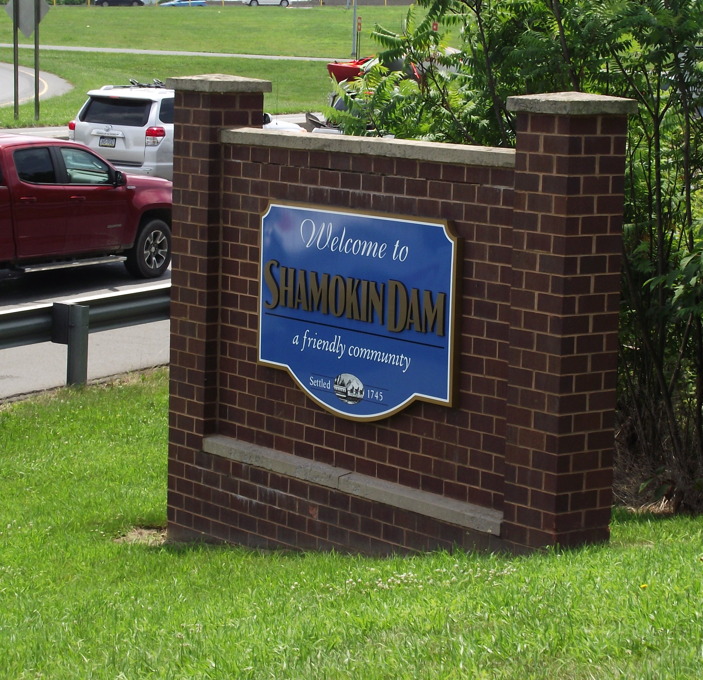

Welcome to Shamokin Dam
On behalf of Council President Donald Musser, Vice President Andrew Bickhart, and Councilmen Domenico Barillaro, Mark Benner, Kyle Jessick, Robert Lockcuff, and David Sauers, we hope you find the information provided here to be useful. We believe Shamokin Dam is a great place to live, work and do business. Historically we have been, and continue to be, a well governed and managed, fiscally responsible community. We offer police and fire protection, low taxes, municipal water and sewer, both new and existing well maintained housing, shopping centers, hotels, restaurants, business opportunities, medical facilities, churches, five family oriented parks and we are home to the world’s largest inflatable dam, which during the summer months creates Lake Augusta on the Susquehanna River, and provides outstanding water recreational opportunities. In short, Shamokin Dam offers an excellent quality of life. Since the first settlers took root here in 1745 our history has been tied to transportation. First, as a major stop on the Pennsylvania Canal, Shamokin Dam became an important hub of commerce in the valley. Today, sitting astride Routes 11 and 15, we continue that tradition. If you are looking for a place to live or do business, we hope you will give us serious consideration. We are ready to assist you in any way possible. Thank you for visiting our web site and stop back often to see what’s new.
About the area
 Shamokin Dam on Routes 11 & 15 resides just south of the confluence of the west and north branches of the Susquehanna River. Its name is derived from a ten-foot-tall dam that was built across the Susquehanna River in the 1800s. The dam supported steamboat ferries ran by Ira T. Clement, which transported goods and people between Shamokin Dam and the city of Sunbury on the Northumberland County side of the river. These ferries operated from 1772 until the Bainbridge Street Bridge was built in 1907. The dam also provided water to the Susquehanna Division of the Pennsylvania Canal System which was constructed on the Shamokin Dam side of the river. The dam was destroyed by ice in March 1904. Germans were among the first European settlers in the region. Their influence continues today in the presence of the Amish and Mennonite sects. Shamokin Dam was founded by George Keen in 1745. As of the census of 2000, there were 1,502 people, 688 households, and 436 families residing in the borough. U.S. Routes 11 and 15 passes through the borough. The highway is a major travel artery through the region.
Read MoreContact Us
Fax: 570-743-4102
Telephone: 570-743-7565